Atlas · um produto NEXA
Atlas · um produto NEXAEscute sua organização.
Amplie a visão sobre pessoas.
Dois módulos na mesma plataforma: o Atlas Clima, pesquisa de clima com respostas anônimas e leitura por área e liderança, e o Atlas 360, avaliação com autoavaliação comparada aos pares.
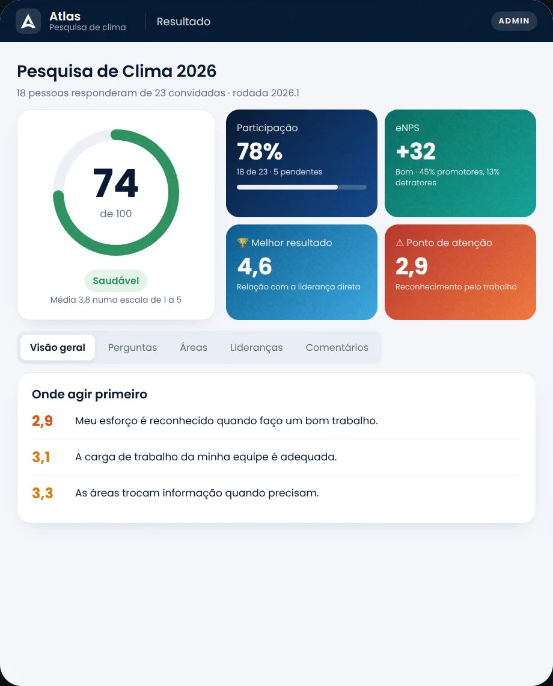
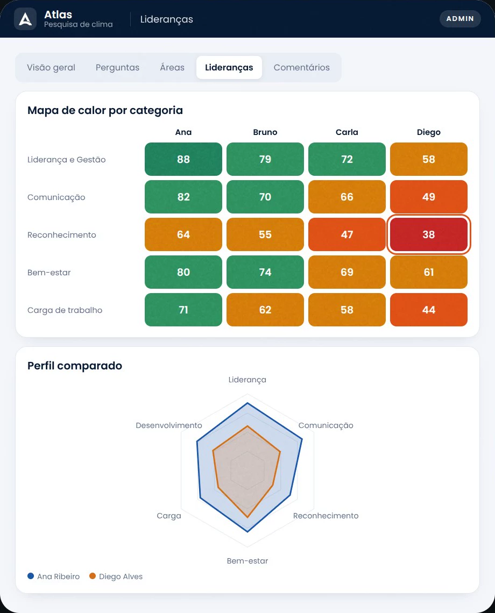
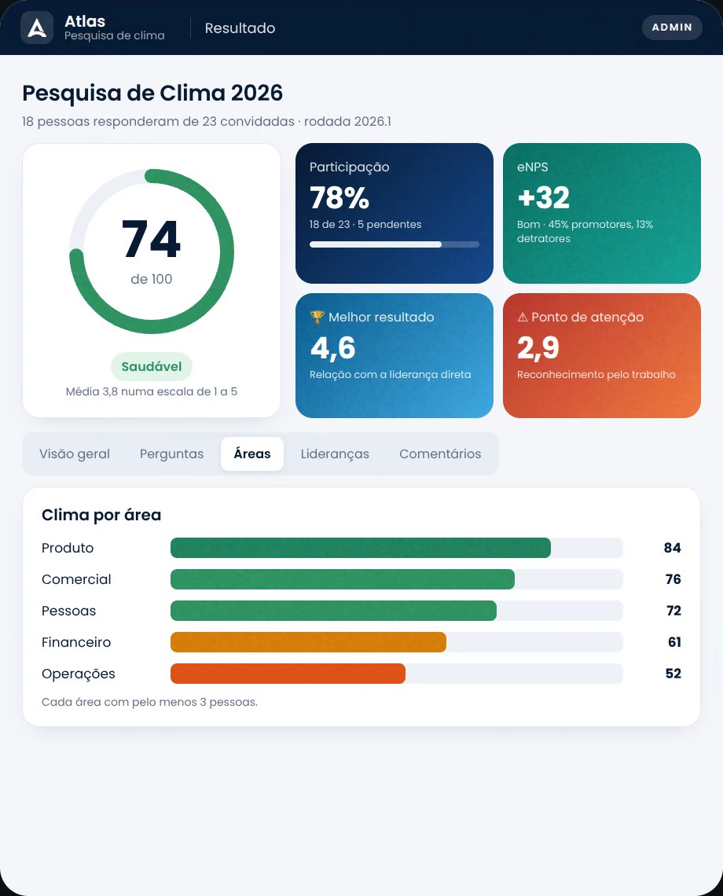
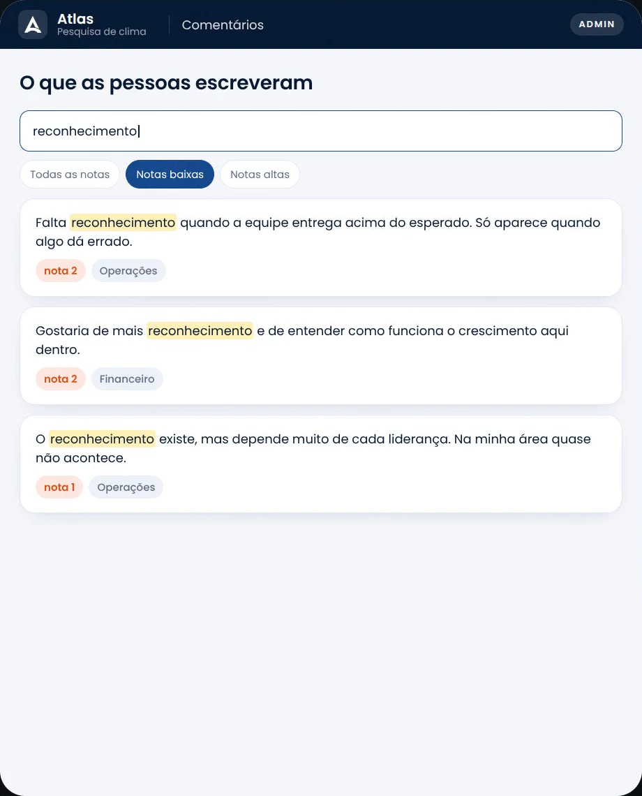
O sinal aparece antes. Para quem escuta.
afastamentos do trabalho por saúde mental no Brasil em 2024, alta de 68% sobre o ano anterior.
Ministério da Previdência SocialCom a NR-1 atualizada, os riscos psicossociais passaram a fazer parte do gerenciamento de riscos ocupacionais. O Atlas Clima ajuda o RH a escutar as pessoas e acompanhar o tema por área e por liderança.
Ele não substitui o programa de gerenciamento de riscos nem a avaliação técnica de saúde e segurança do trabalho: dá ao RH a escuta que alimenta esse trabalho.
Responda como um colaborador.
É assim que a pergunta aparece no celular de quem responde, e assim que o resultado chega ao RH. Toque numa resposta.
Exemplo ilustrativo. Sua resposta entra no conjunto, sem nome.
Promotores (9 e 10) menos detratores (0 a 6). Exemplo ilustrativo.
Do questionário à conversa certa.
Questionário pronto em minutos.
Comece de um modelo, ajuste categorias e perguntas e defina a rodada e o prazo. Uma categoria pode se repetir para cada liderança avaliada.
- Modelos de questionário reaproveitáveis
- Escalas de concordância, frequência e satisfação
- eNPS e perguntas abertas
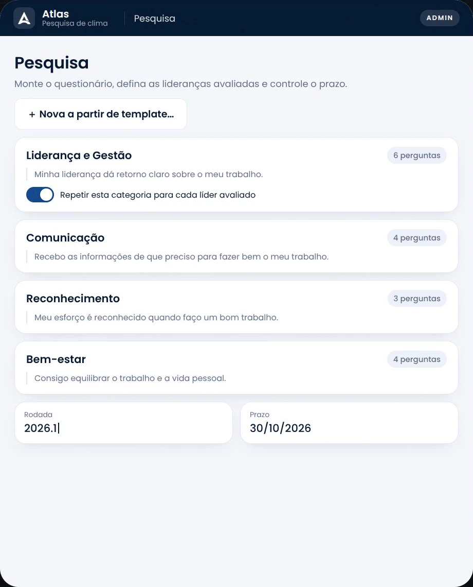
Um link. Respostas anônimas.
Um endereço só para toda a empresa, com QR code para imprimir ou projetar. Cada pessoa responde de forma anônima, sem cadastro. Se preferir, cada pessoa ganha um link único.
- Link aberto e QR code
- Links individuais por colaborador
- Acompanhamento de quem já respondeu, sem ver respostas
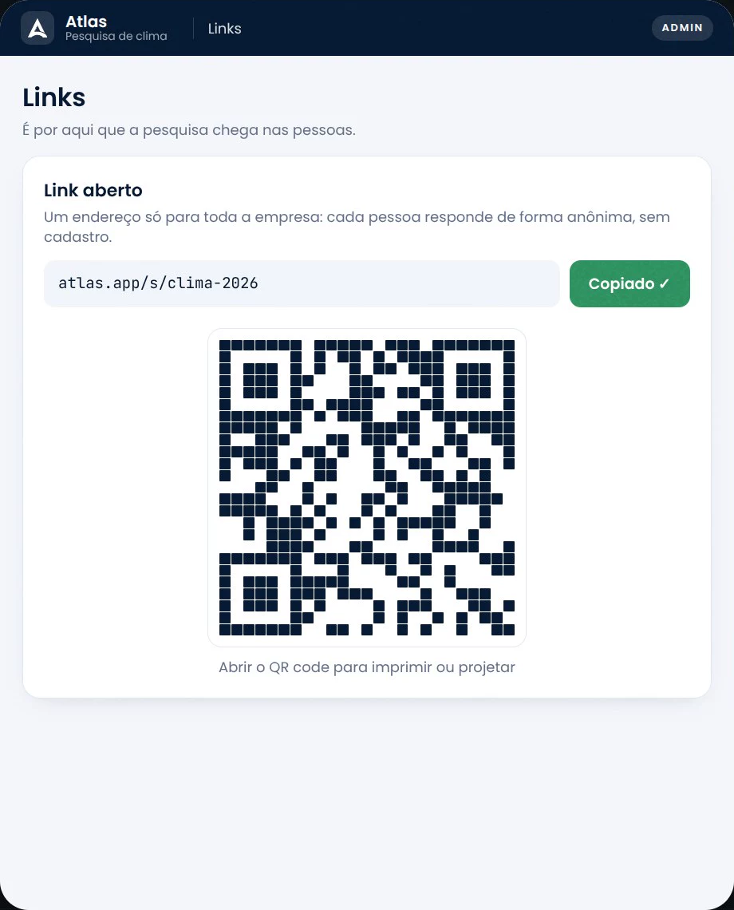
Quatro minutos, pelo celular.
Uma pergunta por vez, com a escala em cartões grandes e o progresso no topo. A tela diz o tempo todo que as respostas são anônimas.
- Escala de 1 a 5 com rótulos claros
- eNPS de 0 a 10
- "Nada disso fica ligado ao seu nome"
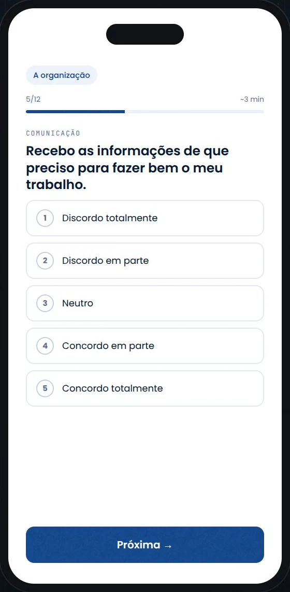
O clima inteiro num painel.
Clima de 0 a 100 com faixa (de crítico a muito saudável), participação, eNPS, o melhor resultado e o ponto de atenção. E onde agir primeiro.
- Clima geral e por pergunta
- "Onde agir primeiro" e "o que sustenta o clima"
- Clima por área, com pelo menos 3 pessoas
Cada liderança, em perspectiva.
Mapa de calor de cada categoria por liderança e o perfil comparado entre líderes. A conversa começa pelo que os números mostram.
- Mapa de calor por categoria
- Comparativo pergunta a pergunta
- Perfil comparado em radar
O que as pessoas escreveram, pronto para a diretoria.
Busca nos comentários, filtro por notas baixas ou altas e exportação em PDF ou planilha com os dados por trás de cada número. O relatório também pode ser compartilhado com código de acesso.
- Comentários com busca e filtros
- Relatório em PDF e planilha
- Relatório público protegido por código
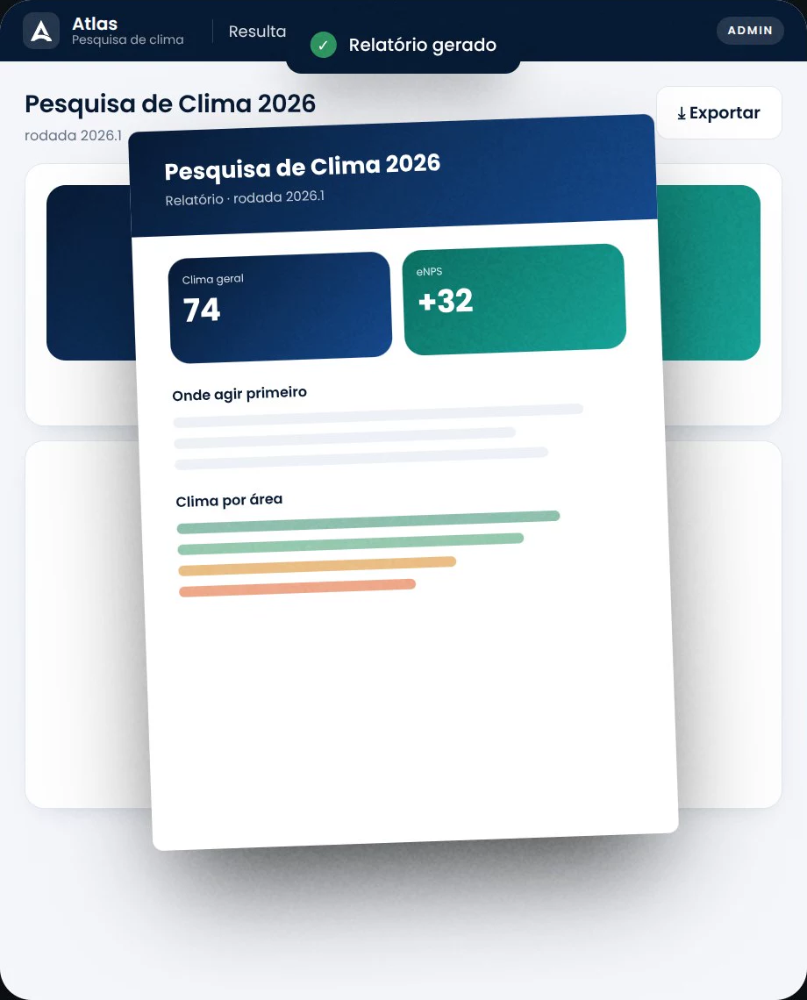
Anonimato por desenho.
cadastros no link aberto
Quem responde não se identifica. O RH lê o conjunto, nunca a resposta de uma pessoa.
pessoas por área
Uma área só aparece no painel com pelo menos 3 respostas, para ninguém ser reconhecido pelo recorte.
avaliações de pares no 360
Abaixo disso, o resultado da pessoa avaliada não abre. E o PDF dela sai sempre sem os nomes de quem escreveu.
Feedback que vira caminho.
A mesma pessoa vista por ela mesma e pelos pares. A distância entre os dois olhares é onde a conversa de desenvolvimento começa.
Defina quem avalia quem.
Adicione as pessoas avaliadas e marque, numa matriz, quem avalia cada uma. Colaboradores e lideranças são importados automaticamente.
- Matriz avaliador × avaliado
- "Todos" ou "Nenhum" por coluna
- Contagem de atribuições em tempo real
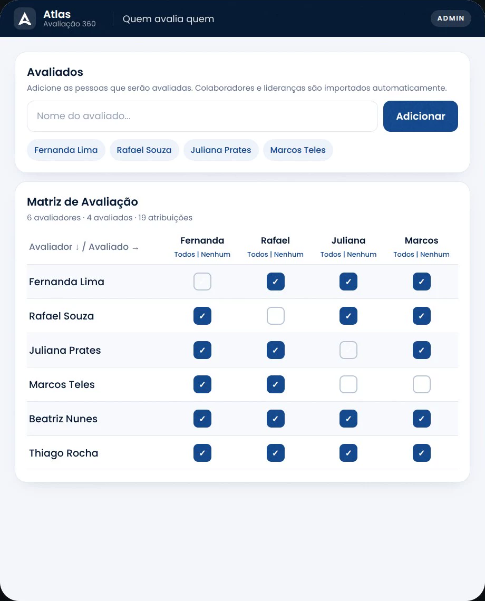
Cada pessoa avalia pelo celular.
O avaliador vê "Avaliando Fernanda Lima", responde a escala e escreve com as próprias palavras. A autoavaliação segue o mesmo caminho.
- Escala e perguntas abertas
- Autoavaliação na mesma rodada
- Confirmação antes de enviar
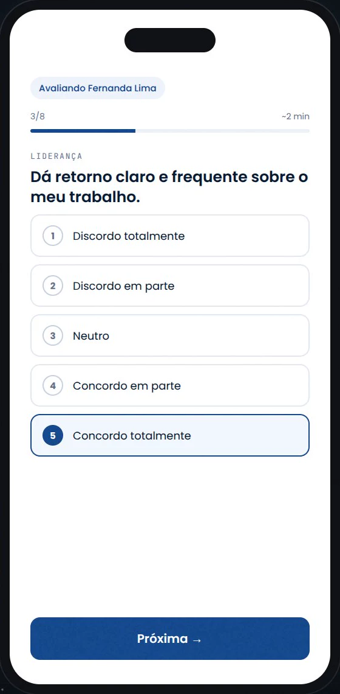
Como se vê × como é vista.
Para cada pessoa: a média dos pares, a autoavaliação e a diferença entre as duas, com a leitura "se vê acima", "se vê abaixo" ou "leitura alinhada".
- Participação e média da diretoria
- Maior distância entre autoavaliação e pares
- Resultado só com 3 ou mais avaliações de pares
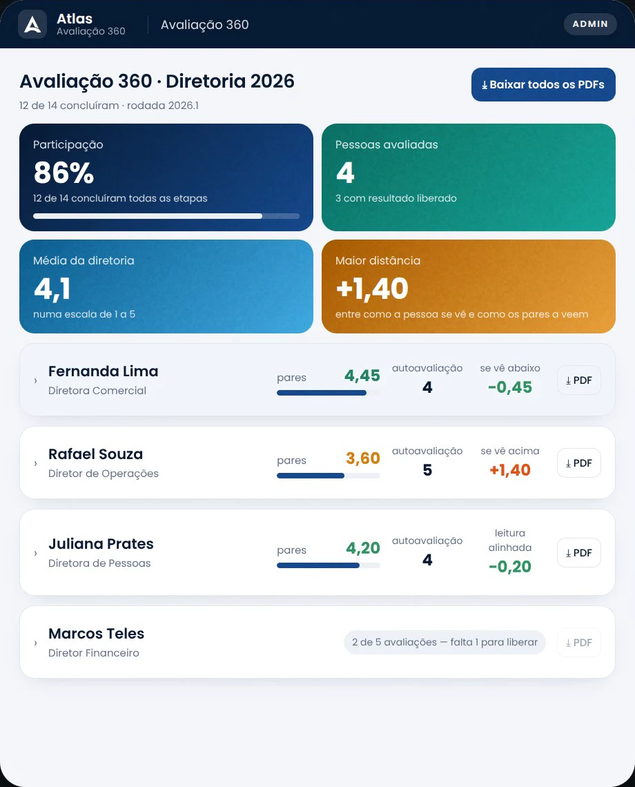
O que os pares dizem, sem assinatura.
Abra a pessoa e leia como ela se vê e o que os pares escreveram, agrupado por pergunta. Abaixo de 3 avaliações, nada aparece: ficaria fácil deduzir quem escreveu.
- "Como ela se vê" ao lado dos pares
- Comentários agrupados por pergunta
- Rodada identificada só para a coordenação, se quiser
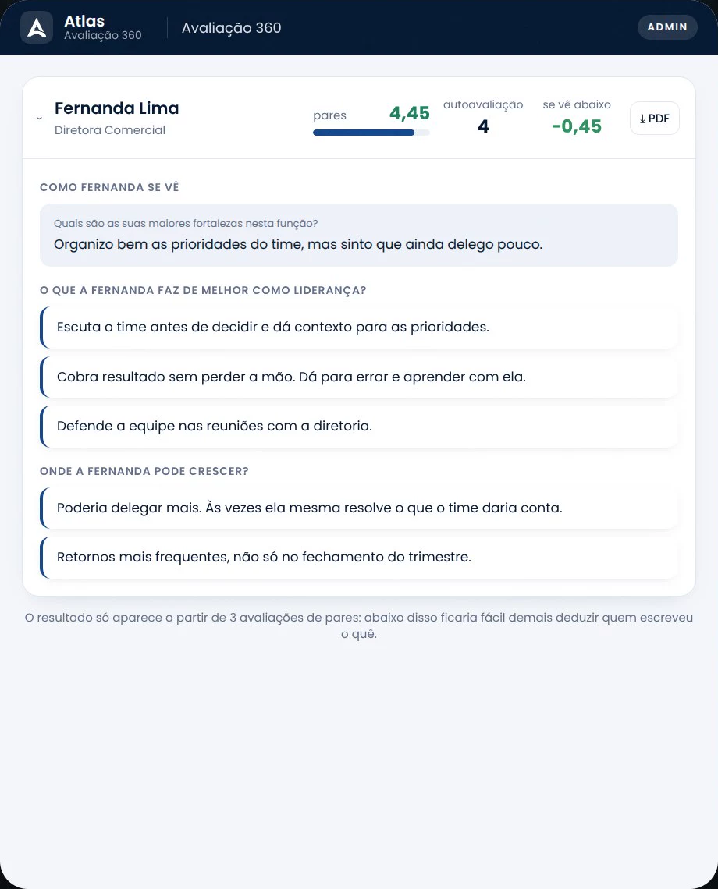
Um PDF por pessoa, pronto para a conversa.
A devolutiva sai em PDF individual com a média dos pares, a autoavaliação, a diferença e os comentários, sempre sem os nomes de quem escreveu.
- PDF por pessoa ou todos de uma vez
- Sem identificação de quem avaliou
- Pronto para o um a um
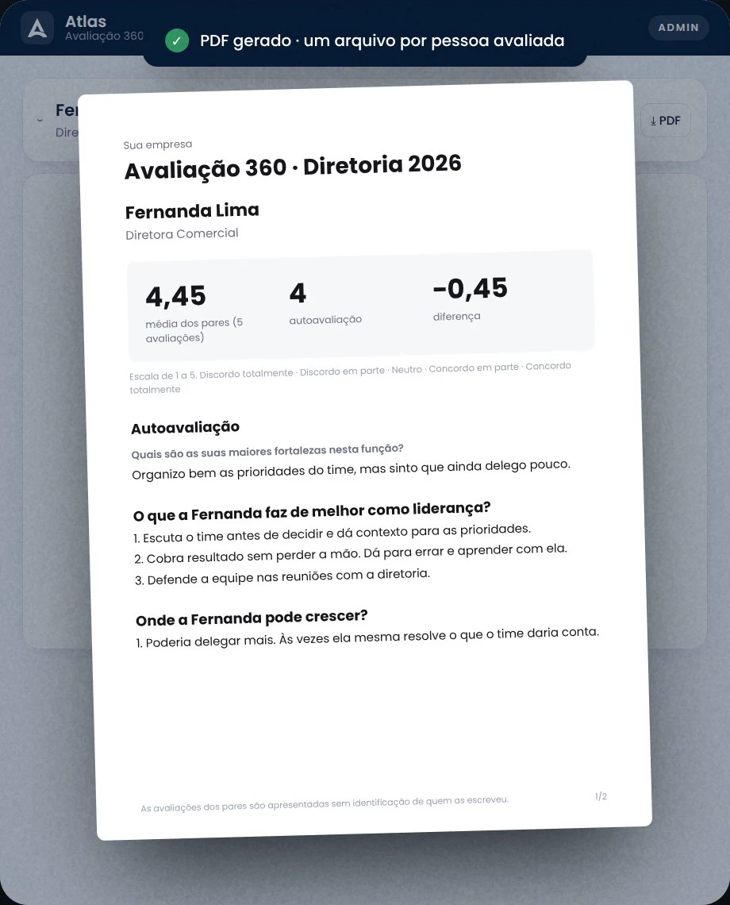
Se vê acima, abaixo ou alinhada?
Mexa na autoavaliação e na média dos pares. O Atlas 360 usa a mesma régua para ler a diferença.
Quem se vê acima do que os pares veem tende a não buscar ajuda; quem se vê abaixo costuma estar sendo duro demais consigo. Perto de zero é a leitura alinhada, que é o resultado saudável.